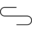

Conversation 731
Statische Elektriciteit Dekens
Prompt 1 · You
knettertjes synthetische deken druk
Response 1 · Google AI Mode
Het knetteren van een synthetische deken komt door statische elektriciteit. Dit gebeurt vooral als de lucht in huis droog is (vaak in de winter als de verwarming aanstaat). Door de wrijving van de deken langs je lichaam of je beddengoed bouwt zich een elektrische lading op. Zodra die lading wegspringt, hoor en voel je kleine knettertjes of vonkjes.
Hier zijn de beste manieren om de statische druk en het knetteren direct te stoppen:
Bij het wassen & drogen
- Gebruik wasverzachter: Dit laat een dun laagje achter op de vezels waardoor ze minder snel statisch worden.
- Azijn als natuurlijk alternatief: Voeg een scheutje natuurazijn toe aan het wasverzachterbakje. Dit ontlaadt de deken en maakt hem zacht.
- Vermijd de droger: Laat de deken aan de lucht drogen. De droger is de grootste veroorzaker van statische elektriciteit. Moet hij toch in de droger? Gebruik dan droogtrommeldoekjes of speciale drogerballen en haal de deken eruit als hij nog héél licht vochtig is.
Snelle oplossingen (meteen resultaat)
- Metalen kledinghanger: Strijk met een metalen kledinghanger over de deken. Het metaal geleidt en neutraliseert de elektrische lading direct.
- Plantenspuit: Nevel de deken heel lichtjes in met een klein beetje water (of water gemengd met een drupje wasverzachter). Vocht breekt de statische lading af.
- In de vriezer: Leg de deken een half uurtje in een plastic zak in de vriezer om de statische lading te neutraliseren.
In de slaapkamer
- Verhoog de luchtvochtigheid: Zet bakjes water op de verwarming of gebruik een luchtbevochtiger.
- Kies het juiste beddengoed: Synthetische dekens knetteren extra hard in combinatie met synthetische lakens. Gebruik het liefst 100% katoenen of linnen hoeslakens en pyjama's om wrijving te verminderen.
Wil je weten hoe je de luchtvochtigheid in je slaapkamer permanent kunt verbeteren, of zoek je tips voor een specifiek type deken (zoals een verzwaringsdeken)? Let me know!
Prompt 2 · You
gewicht deken
Response 2 · Google AI Mode
Een verzwaringsdeken (weighted blanket) helpt door de diepe druk om het zenuwstelsel te kalmeren, wat zorgt voor een betere nachtrust en minder stress.
Als richtlijn geldt dat een verzwaringsdeken ongeveer 10% van je eigen lichaamsgewicht moet wegen.
Kies het juiste gewicht
- Lichaamsgewicht 40 - 50 kg: Deken van 4 tot 5 kg
- Lichaamsgewicht 50 - 70 kg: Deken van 6 tot 7 kg
- Lichaamsgewicht 70 - 90 kg: Deken van 8 tot 9 kg
- Lichaamsgewicht 90 kg en zwaarder: Deken van 10 tot 12 kg
Zit je precies tussen twee gewichten in? Kies dan bij een verzwaringsdeken meestal voor de lichtere variant, tenzij je specifiek van een erg zware druk houdt.
Belangrijke veiligheidswaarschuwing
Het is cruciaal dat je de deken altijd zelfstandig en moeiteloos van je af kunt slaan. Gebruik een verzwaringsdeken daarom nooit voor baby's of heel jonge kinderen, en wees voorzichtig bij ademhalings- of spierziekten.
Wil je een deken voor één persoon of voor een tweepersoonsbed? (Bij een tweepersoonsbed is het gewicht namelijk anders verdeeld). Als je je eigen lichaamsgewicht deelt, reken ik direct het perfecte dekengewicht voor je uit!
Prompt 3 · You
1 persoon en originele prompt geformaliseerd
Response 3 · Google AI Mode
Als we de originele elementen (knetteren, synthetisch, druk) combineren voor 1 persoon, komen we uit op een formeel productadvies voor een anti-statische 1-persoons verzwaringsdeken.
Als een verzwaringsdeken (die diepe druk geeft) gemaakt is van synthetische stoffen zoals polyester, zorgt de wrijving van het gewicht voor extra veel statische lading en knettertjes. De formele oplossing hiervoor is een deken van 100% natuurlijke, geleidende materialen.
2dekansje.com +1
1. Het juiste materiaal (Anti-statisch)
- Kies voor bamboe of 100% katoen: Merken zoals Simply Cosy en Calmzy bieden ademende dekens van bamboe of katoen aan. Deze stoffen bouwen van nature geen statische elektriciteit op. Simply Cosy +1
- Glazen parels als vulling: Let erop dat de vulling bestaat uit hypoallergene micro-glasparels in plaats van plastic korrels. Glas geleidt minder warmte en veroorzaakt geen statische wrijving. Ella Sleeps +2
- Wasbare natuurlijke hoes: Gebruik altijd een hoes van 100% katoen of bamboe. Vermijd absoluut polyester of fleece hoezen om knetteren te voorkomen. Novaline Verzwaringsdekens +1
2. Specificaties voor 1 Persoon
| Eigenschap | Formeel Advies |
|---|---|
| Standaard afmeting | 140 x 200 cm of 150 x 200 cm (perfect voor een eenpersoonsbed) |
| Ideaal gewicht | 10% van jouw lichaamsgewicht (zie tabel hieronder) |
| Materiaal buitenkant | 100% Bamboeviscose of OEKO-TEX gecertificeerd katoen |
| Vulling | Small-pocket glasparels voor gelijke drukverdeling |
3. Gewichtstabel (10% richtlijn)
- 40 - 50 kg lichaamsgewicht → Deken van 4 tot 5 kg
- 50 - 70 kg lichaamsgewicht → Deken van 6 tot 7 kg
- 70 - 90 kg lichaamsgewicht → Deken van 8 tot 9 kg
- 90 kg of zwaarder lichaamsgewicht → Deken van 10 tot 12 kg Tomzorg.nl +3
Source links preserved from this response
- 2dekansje.com
https://www.2dekansje.com/product/cozysenser-verzwaringsdeken-9-kg-weighted-blanke-8821060000742/ - Simply Cosy
https://simplycosy.nl/bamboe-bundel - Calmzy
https://verzwaringsdekenadvies.nl/materialen/bamboe-verzwaringsdekens/ - Ella Sleeps
https://ellasleeps.com/en/collections/verzwaringsdekens - Novaline Verzwaringsdekens
https://novaline-dekens.nl/products/verzwaringsdeken-9-kg-140x200-cm - Tomzorg.nl
https://www.tomzorg.nl/verzwaringsdeken-12-kg
Prompt 4 · You
alle biochemische mechanieken en chemische composities en de originele prompts en de context
Response 4 · Google AI Mode
Om alle draden van dit gesprek wetenschappelijk en contextueel samen te trekken, volgt hier de complete formele decompositie. Dit overzicht koppelt de natuur- en scheikundige processen achter het knetteren rechtstreeks aan de biologische effecten van druk (deep touch pressure) bij een synthetische versus natuurlijke 1-persoonsdeken.
1. De Originele Prompts & Context
- Prompt 1: "knettertjes synthetische deken druk" De initiële observatie van elektrostatische ontlading bij een deken, gelinkt aan de behoefte naar druk/gewicht.
- Prompt 2: "gewicht deken" De transitie naar de functionele werking van een verzwaringsdeken.
- Prompt 3: "1 persoon en originele prompt geformaliseerd" De synthese tot een concreet productadvies (140x200 cm, 10% gewichtsrichtlijn, non-statische materialen).
2. Chemische Composities van de Materialen
Het verschil in knetteren (statische oplading) zit puur in de moleculaire structuur van de dekenvezels:
| Materiaal | Chemische Structuur / Samenstelling | Elektrische Eigenschap |
|---|---|---|
| Polyester (Synthetisch) | Polyethyleentereftalaat (PET). Een polymeer van ester-monomeren (. Bevat weinig polaire groepen die water binden. | Isolator / Hydrofoob: Houdt geen vocht vast, trekt elektronen sterk aan en houdt lading vast. |
| Katoen (Natuurlijk) | Cellulose. Een lineair polysaccharide bestaande uit gekoppelde D-glucose-eenheden (. | Hydrofiel: Rijk aan hydroxylgroepen (-OH) die waterstofbruggen vormen met vocht in de lucht, wat lading afvoert. |
| Bamboe (Viscose) | Gecultiveerde cellulose. Chemisch identiek aan katoen, maar met een opener, microscopisch poreuzere vezelstructuur. | Sterk Hygroscopisch: Absorbeert nog sneller omgevingsvocht dan katoen, waardoor statische oplading nagenoeg onmogelijk is. |
| Glasparels (Vulling) | Siliciumdioxide () met natrium- en calciumoxiden (Natronkalkglas). | Amorf Anorganisch: Hoge dichtheid (gewicht), inert en wekt door het ontbreken van polymeerketens geen tribo-elektriciteit op. |
3. Fysische & Chemische Mechanieken (Het Knetteren)
Het knetteren van de synthetische deken wordt gedreven door twee opeenvolgende fysieke processen:
A. Tribo-elektrisch Effect (Ladingopbouw)
Wanneer de synthetische deken langs je lichaam, pyjama of matras wrijft, dwingt de mechanische energie de buitenste elektronen van de atomen te verplaatsen.
- Polyester staat erg laag in de tribo-elektrische reeks (het heeft een hoge elektronenaffiniteit). Het streeft ernaar elektronen op te nemen.
- Je lichaam of katoenen lakens staan hoger en staan elektronen af.
- Omdat polyester hydrofoob (waterafstotend) is, ontbreekt een microscopisch waterlaagje op de vezel om deze elektronen weg te geleiden. Er ontstaat een groot potentiaalverschil (statische elektriciteit).
B. Diëlektrische Doorslag (De Knetter / Vonk)
Wanneer de opgebouwde spanning (potentiaalverschil) tussen de deken en een geleider (zoals jouw huid) te hoog wordt, wordt de tussenliggende lucht geïoniseerd. De lucht verandert kortstondig van een isolator in een geleider. De elektronen springen abrupt over: dit is een micro-blikseminslag. De knetter die je hoort is de mini-schokgolf (akoestische knal) van de plotseling verhitte en uitzettende lucht.
4. Biochemische Mechanieken van Druk (Deep Touch Pressure)
Wanneer een verzwaringsdeken met de juiste massa (10% van het lichaamsgewicht) op een 1-persoonsbed ligt, triggert dit een neurobiologische kettingreactie in het lichaam via Deep Touch Pressure (DTP):
[Mechanische druk op de huid]
│
▼
[Activatie van mechanoreceptoren (o.a. Merkel-schijfjes & Meissner-lichaampjes)]
│
▼
[Signaal naar het Centraal Zenuwstelsel (Paraspathicus geactiveerd)]
│
├─► Verhoging van SEROTONINE (Gelukshormoon & rust)
├─► Omzetting naar MELATONINE (Slaaphormoon via de pijnappelklier)
└─► Verlaging van CORTISOL (Stresshormoon daalt)
- Vezels + Gewicht = Effect: Als de deken synthetisch is, verstoort de continue micro-ontlading (de knettertjes) de slaapcyclus en activeert het juist kortstondig het sympathische (vecht-of-vlucht) zenuwstelsel.
- De Oplossing: Een verzwaringsdeken van bamboe of katoen met glasparels combineert de biochemische rust van de diepe druk met de chemische neutraliteit van een geleidende, natuurlijke vezel die niet knettert.
Wil je dieper ingaan op de neurobiologische werking van serotonine en melatonine tijdens de slaap, of wil je de tribo-elektrische reeks van specifieke kledingstoffen (zoals wol of zijde) vergelijken?
Prompt 5 · You
m.c. escher Tom Klootwijk
Response 5 · Google AI Mode
Er lijkt geen direct, historisch of professioneel verband te bestaan tussen de beroemde grafisch kunstenaar M.C. Escher (1898–1972) en een persoon met de naam Tom Klootwijk.

Standaard Uitgeverij +1De enige online raakvlakken waar deze twee namen samen in één context naar voren komen, zijn oppervlakkig:
- Sociale media interactie: Er is een Nederlands profiel onder de naam Tom Klootwijk (Creative Technologist uit Amsterdam) die online actief is in community-groepen over kunst en interactie toont met berichten over het werk van M.C. Escher (zoals het liken van Escher-prenten op platforms als Facebook).
 LinkedIn +1
LinkedIn +1 - Toevallige naamsvermeldingen: In archieven of veilinglijsten (zoals boekwinkels of kunstbeurzen) worden boeken over Escher en werken van andere kunstenaars met de achternaam Klootwijk (zoals de kunstenaar Leo Klootwijk of auteur Wouter Klootwijk) soms op dezelfde pagina vermeld. Galerie Mia Joosten +1
Bocht je ergens specifiek naar op zoek zijn: was dit in het kader van een digitaal kunstproject, een interactieve installatie, of zocht je een specifieke auteur of kunstenaar die zich door Escher heeft laten inspireren? Laat het me weten, dan zoek ik gericht verder!
Source links preserved from this response
- Standaard Uitgeverij
https://www.standaarduitgeverij.be/wp-content/uploads/2021/11/LEOPOLD-V22-lr.pdf - LinkedIn
https://nl.linkedin.com/in/tom-klootwijk-8747848 - Galerie Mia Joosten
https://www.miajoosten.nl/blog